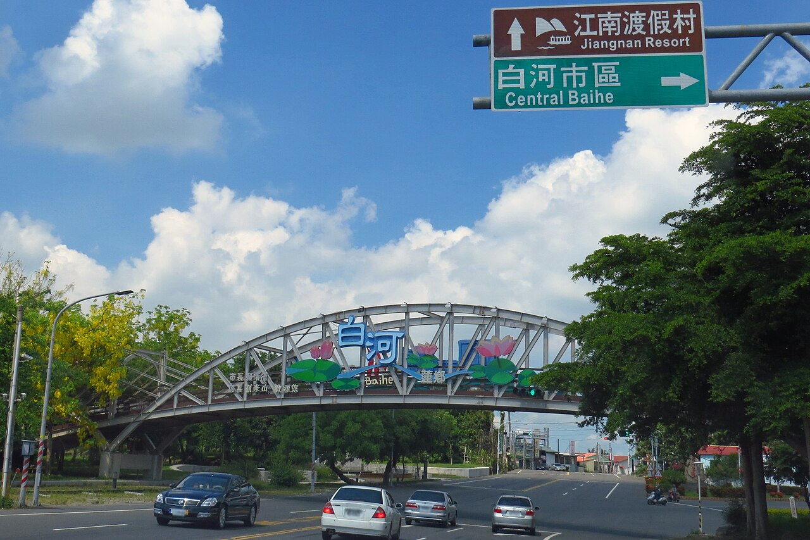

這一頁，是幫你從「什麼都不會」走到
「穿上白河商工的球衣」的完整地圖。
不是喊口號，是每個月要做什麼、練到什麼程度，全部寫清楚。
距離 116 年國中教育會考（2027 年 5 月 15、16 日）
先搞懂遊戲規則
很多人以為「要進高中球隊＝要當體育班＝要考術科」。在白商，這件事其實不是這樣。這三個真相會直接改變你的努力方向。
正式全名是「國立白河高級商工職業學校」，大家簡稱白商。沒有一所學校叫「白河高工」。查資料、打電話、填志願的時候都要用對名字，才不會找錯。
白商男排出現在高中排球聯賽（HVL）乙級臺南市預賽的參賽名單裡（官方成績表 111、112 學年度都查得到）。乙級隊多半是一般生組成的校隊／球隊，不像甲級那樣需要體育班身分。
白商有招生簡章的球隊是棒球，排球目前查不到「排球術科招生」。意思是：你不用先變成排球選手才進得去，你是先進學校，再進球隊。
白商從 106 學年起就是臺南區試辦「完全免試入學」的學校之一，而且每年還會辦續招（代表名額沒有被搶爆）。
換句話說：會考不是你的障礙，你不需要考很高分。但「不需要高分」不等於「不用讀」——後面會告訴你真正該搶的分數在哪裡。
你要去的地方
先認識它，你才會真的想去。這是一所走技職路線的老學校，前身可以追到 1927 年，校地六公頃多，操場和球場的空間很夠。
全名：國立白河高級商工職業學校
地址：732 臺南市白河區永安里新興路 528 號
電話：(06) 685-2054 傳真：(06) 683-0152
校地：約 6.1 公頃
日間部大致有：商業經營科、資料處理科、資訊科、電機科、機械科、土木科、水電科、汽車科、汽車修護科、多媒體技術科、綜合職能科。
選科小提醒：如果你打算高中三年都要練球，先想清楚「哪一科的作業量和實習時數，你撐得住」。喜歡動手就往機械／電機／汽車，喜歡電腦就往資訊／資處／多媒體。開放參觀日一定要去問在校生。
這一頁沒有放白商的校園照片——那些照片的版權是學校的，這裡不轉載。 但下面四個按鈕會直接帶你到官方來源，全部都是真的、而且是最新的。
白河商工在哪裡
白河區在臺南市的最北端，再往北就是嘉義。這裡以蓮花和關子嶺溫泉出名， 夏天整片荷花田，是台南人夏天會特地開車來的地方。學校就在白河市區旁邊。

相對位置示意圖（非等比例地圖）。實際路線與班次請以學校公告及公車動態為準。
可以拖曳、放大縮小。校地範圍、周邊街道、操場位置都看得到。
以下路線整理自學校官網「住宿與交通方式」頁面。
| 出發地 | 怎麼搭 | 備註 |
|---|---|---|
| 新營火車站 | 轉大台南黃幹線公車往白河 | 約 25 分鐘。學校官網提到 06:55 班車會繞駛白河商工；17:30 有班車自白河商工發車回新營 |
| 後壁火車站 | 搭黃10公車往六重溪方向，白河站下車 | 約 20 分鐘 |
| 嘉義火車站 | 搭嘉義客運往白河或關子嶺 | 從嘉義方向來最直接 |
| 高鐵嘉義站 | 先接駁到台鐵嘉義站，再轉客運 | 學校官網提到直接叫計程車約 500 元 |
| 開車（南二高） | 下白河交流道，往白河市區到學校 | 最快的自駕路線 |
| 開車（中山高） | 下新營交流道→長榮路接台1線→轉172 鄉道經安溪寮到白河商工 | — |
| 學校校車 | 有專車，共 6 條路線 | 詳見下方路線表 |
← 左右滑動看完整表格 →
以下整理自學校 115 學年度公告的專車路線表。先看清楚它到哪、不到哪，這會直接決定你要不要住校。
| 路線 | 大致範圍 | 最遠站點（距學校） | 最早發車 |
|---|---|---|---|
| 嘉義線 | 民雄 → 嘉義市區 → 水上 → 南靖 → 後壁上茄苳 | 早安山丘（民雄）28.8 km | 06:45 |
| 中埔線 | 中埔 → 三界埔 → 公館 → 中庄 → 內角 | 同仁國小 30.3 km | 06:56 |
| 麻豆線 | 麻豆 → 中營 → 下營 → 太子宮 → 新營市區 | 麻豆農會 34.8 km | 06:25 |
| 義竹線 | 布袋 → 義竹 → 鹽水 → 新營 → 菁寮 → 後壁火車站 | 布袋新塭國小 40.8 km | 06:35 |
| 六甲線 | 六甲 → 果毅後 → 大腳腿 → 吉貝耍 → 東山國中 | 二鎮 24 km | 07:00 |
| 青山線 | 高原社區 → 東原 → 嶺南 → 柿子寮 → 東山 | 高原社區 21.7 km | 07:03 |
← 左右滑動看完整表格 →
那要面對的是一個很現實的數字：單程約 45～50 公里。把每種走法算給你看。
| 方式 | 單程時間 | 幾點要出門 | 可行嗎 |
|---|---|---|---|
| 大眾運輸 市區公車 → 台南車站 → 台鐵到新營 → 黃幹線 |
約 2～2.5 小時（含轉乘等車） | 清晨 5 點多 | ❌ 每天來回 4～5 小時，撐不了三年，更不可能練球 |
| 家長開車接送 國道1號 或 台19→台1 |
約 60～70 分鐘 | 6 點前 | ⚠️ 一天來回等於家長開 2 小時多，天天做不現實 |
| 先到麻豆搭校車 家長載到麻豆 → 麻豆線 06:25 |
約 30 分＋校車 75 分 | 5 點 40 分 | ⚠️ 勉強可行但太早，當偶爾的備案就好 |
| 🏠 住校 週日晚上去、週五晚上回 |
一週只移動 2 趟 | — | ✅ 唯一合理的選項，而且天天多出 4 小時 |
← 左右滑動看完整表格 →
住校 ─ 這一段對你最重要
學校官網明確寫著有男女生宿舍，形容是「完善而新穎的設施與自治化管理，為遠道學生提供了最佳的學習與生活空間」。 「遠道學生」講的就是你這種狀況。
1,520 元 / 學期
冷氣另外買冷氣卡使用。這個價格一學期不到兩千，比通勤的油錢車錢還便宜。
洽教官室 生輔組長。
(06) 685-2054 轉 323
錄取後、報到前就要問清楚：床位夠不夠、什麼時候申請、要準備什麼。
省下通勤時間——以你家到白河的距離，通勤來回是 2～5 小時。住校後這些全部變成你的練球時間。
晚上還能加練、作息穩定、跟隊友住在一起感情快、早上不會因為趕車而遲到或睡不飽。
| 時間 | 做什麼 |
|---|---|
| 週日 傍晚 | 家長開車送到學校（約 1 小時車程），帶好一週的衣物 |
| 週一 ~ 週五 | 上課 → 球隊練習 → 晚自習 → 睡。零通勤 |
| 週五 傍晚 | 回家。也可以搭黃幹線到新營、再搭台鐵回台南 |
| 週末 | 在家休息、陪家人。想加練的話自己找牆壁 |
← 左右滑動看完整表格 →
錢的問題
先講最重要的一句：高中職的「學費」現在是全免的。從 112 學年度第 2 學期（2024 年 2 月）起，全國公私立高中職學生都不必繳學費。
學費 ─ 0 元
全面免學費，不用自己申請。學校審定資格後，直接在註冊單上減免，家長不必跑流程。
雜費、以及代收代辦費：實習實驗費、電腦網路使用費、平安保險費、家長會費、書籍費、冷氣費、住宿費等等。
公立高職這些加起來，一學期通常是幾千元的量級。確切金額每年公告，以學校註冊組的收費表為準——這點我沒有替你猜數字。
| 身分／項目 | 補助內容 | 怎麼辦 |
|---|---|---|
| 所有學生 | 免學費（學費全免） | 不用申請，學校直接在註冊單減免 |
| 低收入戶 | 學雜費全免 | 依《低收入戶學生及中低收入戶學生就讀高級中等以上學校學雜費減免辦法》，向學校提出 |
| 中低收入戶 | 學雜費減免 60% | 同上 |
| 原住民學生 | 學雜費減免、原住民優秀學生獎學金 | 白商官網固定公告受理，注意每學期期限 |
| 經濟弱勢 | 教育部學產基金助學金、各項急難救助 | 洽學校學務處或輔導室 |
| 各科成績優異 | 校內外獎學金、民間單位獎助學金 | 學校網站「獎助學金」專區會陸續公告 |
← 左右滑動看完整表格 →
雙軌並行
只顧讀書 → 進得了學校，進不了球隊。只顧打球 → 連學校都進不去。這 9 個月，兩條路一起走。
數字說清楚
臺南區用的是「免試入學超額比序」制度。重點來了：總分 108 分裡，會考只佔 36 分。 另外 72 分，是你現在就能靠日常表現慢慢存起來的。
| 檔位 | 會考目標 | 會考積分 | 意思是 |
|---|---|---|---|
| 🟢 保底 | 5 科都在 B 以上（不要出現 C） | 10 分以上 | 只要多元學習表現有認真存，志願序把白商填第一，上榜機會很高。這是底線，不是目標。 |
| 🟡 目標 | 5 科都到 B++ | 20 分左右 | 穩穩上，還能挑自己真正想讀的科。這是你該瞄準的位置。 |
| 🔴 挑戰 | 2～3 科拿到 A，其餘 B++ | 25 分上下 | 高中三年會輕鬆很多，也替「打球＋升科大」多留一條路。做得到就別客氣。 |
← 左右滑動看完整表格 →
從零開始
教練挑人不是看你現在多會打，是看「這個人一年後會變多強」。所以基本功和體能，才是你要在國三這年偷偷練起來的東西。
最重要、也最好練。兩隻手臂夾緊、膝蓋彎、用身體推不是用手臂甩。
練法：對牆連續墊，或自己往上墊不落地。
檢核：對牆連續 50 下不掉。
額頭前上方、十指張開成三角形，用全身伸展把球送出去，不是用手指戳。
練法：自傳、對牆傳、兩人對傳。
檢核：原地自傳 30 下不移位。
先練下手發球（穩定進場），再進階上手發球。發球是比賽裡唯一「完全由你控制」的一球。
檢核：10 顆下手發 8 顆進場；上手發 5 顆進場。
先不急著扣球，先把助跑節奏（左—右左 / 三步）＋雙手擺臂＋起跳做到自動化。動作對了，力量自然來。
檢核：助跑起跳連續 20 次節奏不亂。
低重心、腳先動再手動、眼睛不離球。新生最容易被留下來的位置，就是「接得起球的人」。
檢核：連續 30 秒左右移動接球不失位。
身高不是你能決定的，彈跳、速度、耐力、不受傷是你能決定的。體能練起來，教練一定看得到。
而且體適能還能直接換免試入學 10 分，一石二鳥。
場上六個位置與輪轉。第一次進球隊，多半從「後排接發球、防守」開始，這正是你可以靠苦練最快追上別人的地方。
| 項目 | 怎麼做 | 頻率 | 為什麼 |
|---|---|---|---|
| 跳繩 | 每次 500～1000 下，可分 5 組 | 每天 | 練彈跳、腳踝剛性、心肺，CP 值最高 |
| 深蹲 / 分腿蹲 | 徒手 20 下 × 3 組 | 每週 3 次 | 跳得高的根本來源 |
| 核心（棒式） | 30～60 秒 × 3 組＋側棒式 | 每週 4 次 | 攻擊、救球時身體不散掉 |
| 折返跑 | 3 公尺線來回 × 10 趟 | 每週 2 次 | 排球是「短距離急停急起」的運動 |
| 慢跑 | 20～30 分鐘 | 每週 2 次 | 一場比賽打三局，沒體力就沒技術 |
| 拉筋收操 | 每次練完 10 分鐘 | 每天 | 受傷是排球夢最大的殺手 |
← 左右滑動看完整表格 →
最重要的一段
左邊是讀書，右邊是練球。 練球每天只要 30～50 分鐘，不會影響讀書——反而讓你更靜得下心。
可以直接照抄
不用完美，能撐一整年的計畫才是好計畫。這份是「國三上學期」版本，寒假和衝刺期再照前面時間軸調整。
| 時段 | 週一 ~ 週五 | 週六 | 週日 |
|---|---|---|---|
| 放學後 16:30–17:30 | 練球 對牆墊球／傳球 30 分＋跳繩 500 下 | 練球 和同學打球 90 分鐘 | 休息 睡飽、拉筋、陪家人 |
| 晚餐 + 休息 | 18:00–19:30（真的放鬆，不要一直想著書） | 自由 | 自由 |
| 晚上第一段 19:30–20:30 | 讀書 數學／理化（頭腦最清楚的時候給最難的） | 讀書 本週錯題本總整理 | 讀書 一整套模擬題（計時） |
| 晚上第二段 20:45–21:45 | 讀書 國文／英文／社會（輪流） | 讀書 英文單字＋作文一篇 | 讀書 檢討＋排下週計畫 |
| 睡前 22:00–22:30 | 拿出單字卡複習今天背的（5 分鐘）→ 睡 | 借大人手機看一場排球比賽（一週一次就好） | 早睡 |
| 合計 | 讀書 2 小時 ‧ 練球 1 小時 | 讀書 2 小時 ‧ 練球 1.5 小時 | 讀書 2 小時 ‧ 完全休息 |
← 左右滑動看完整表格 →
今天、這禮拜
計畫再好，沒開始都等於零。這 8 件事，一週內做完，你就已經領先大部分同學了。
最後一件事
國三這年，你不是在跟班上第一名比。
你是在跟去年那個什麼都還沒開始的自己比。
白商的排球隊，不是只收天才。
乙級聯賽的球隊，多半是一群「高一才第一次認真打排球」的人，
靠著每天下午的加練，一年後站上臺南市的球場。
你比他們早了 — 天開始。
別人在看你能不能做到的時候，
你已經在做了。
誠實區
查證來源：
照片授權：
沒查到、需要你自己問學校的部分：